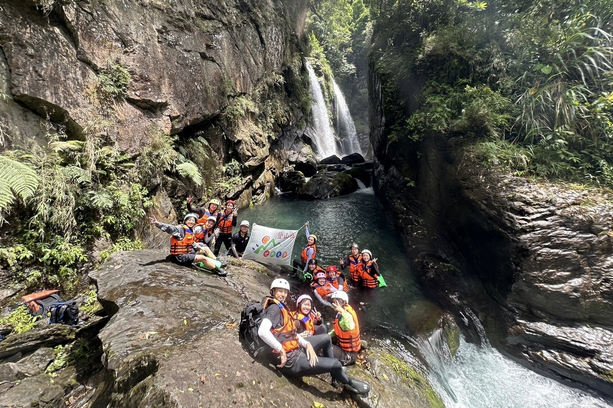
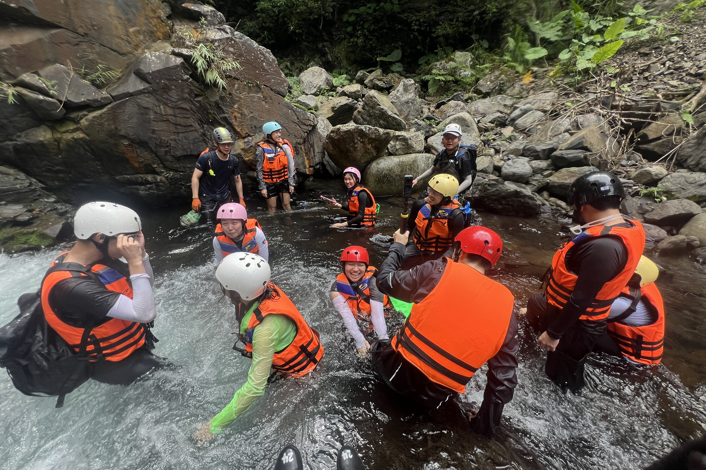
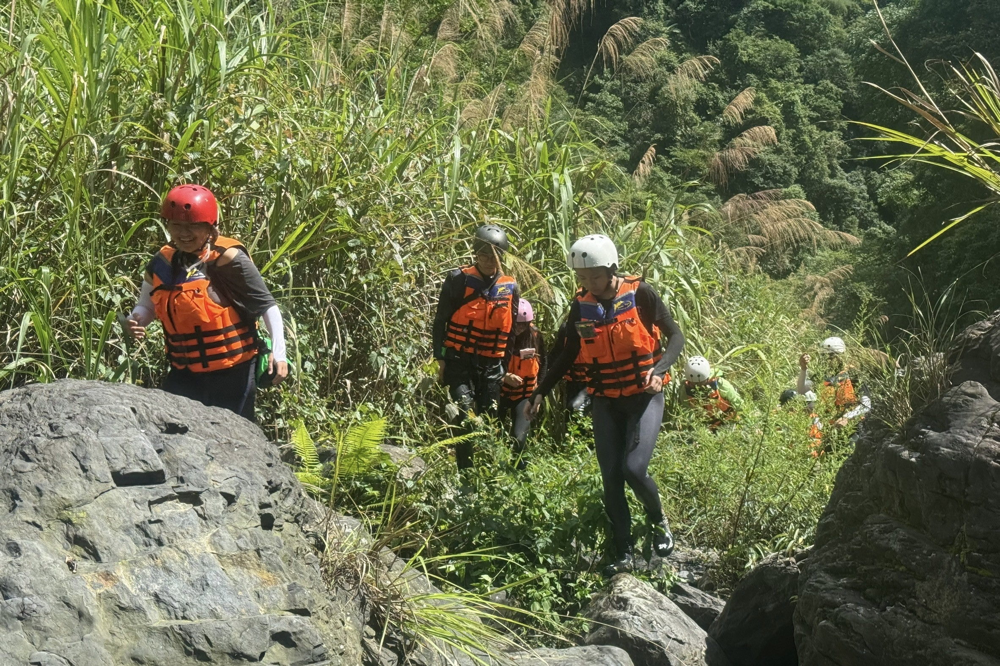
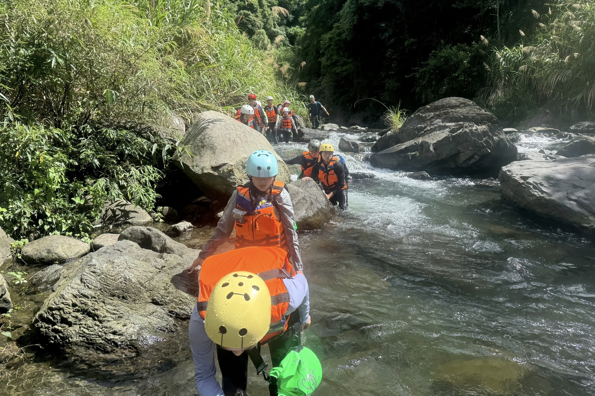
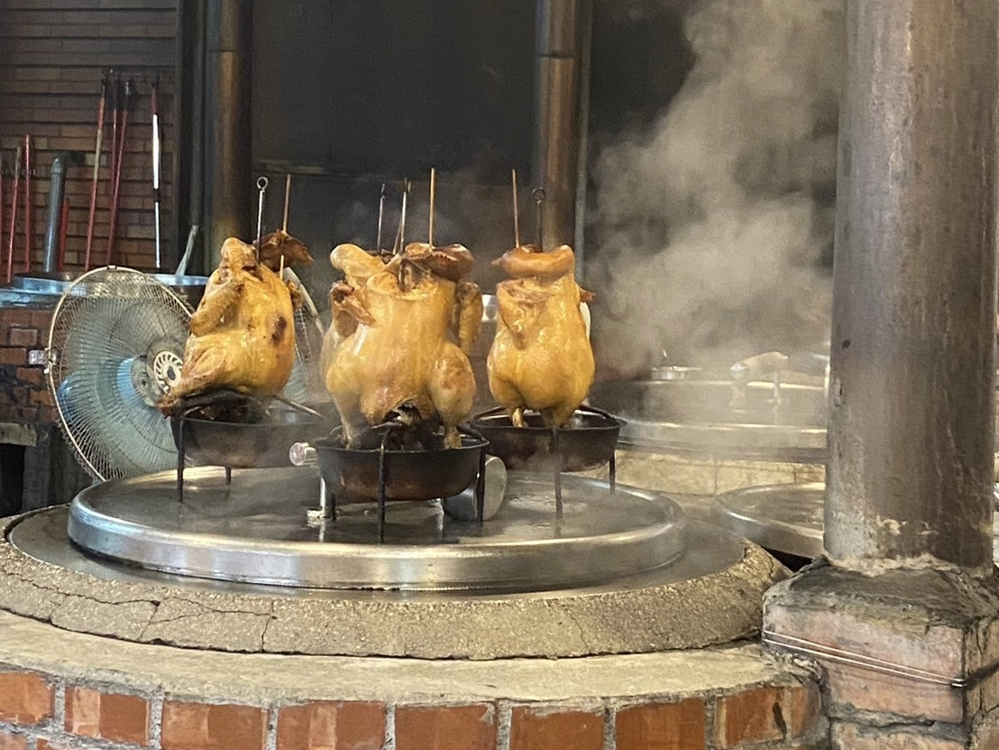
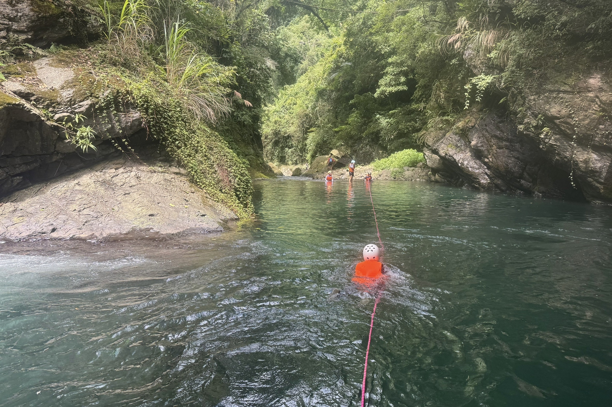
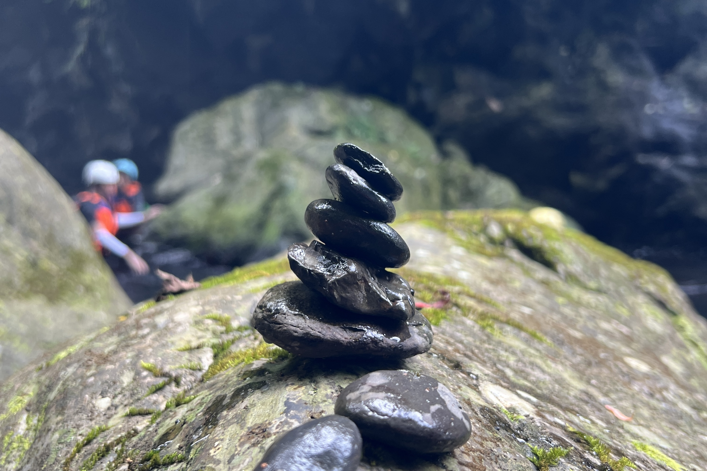

新竹五峰鄉麥巴來溪

新竹五峰鄉麥巴來溪
日期：2024年06月15日（一日行程）
【心得】
早上吃麥當勞早餐很爽，畢竟我也很久沒吃了。

溯溪的過程，很開心，很爽，我自己玩得很開心笑死。因為不認識其他人，所以我基本上沒有跟其他人有什麼互動，我光是自己一個人在那邊走就已經覺得很開心跟滿足（其實自己一個更開心～）。
午餐的時候，因為早上出門太急，沒帶到冰箱的巧克力，所以只有一個麵包。

回程的時候，可以明顯感覺到，我快體力不支了。好吧，我很清楚其實一個麵包不足以提供我足夠的能量。只能說這次沒什麼事，但下次食物要帶夠。我回程的時候都是手腳並用，因為我已經沒有足夠的力氣只透過下半身來支撐我整個人。
回程的時候有一個小插曲。走到一半有個女生發現她的手機不見了。然後他們要找人下水去找。當下其實也有一點想說要不要下去幫忙找，說不定可以去幫忙看看平靜水域，但我最後沒有那個勇氣。或許是因為我把自己放在一個隊員的身份裏面，覺得自己不應該那麼多管閒事。但可惜我生來就是一個多管閒事的人。我希望我多餘的力氣可以拿來幫助別人。最後手機還是沒有找到。後來回程的車上，在大家都睡了的時候，似乎聽到了抽泣的聲音。

回程途中有人不小心被石頭割到手，一直在流血。後來有個想法是想要去學急救，至少在自己遇到這種情況的時候，懂得怎麼去面對。

下山後大家一起去吃了甕仔雞，不得不說合菜真的是一群人才可以吃得到的東西。
寫於2024年10月25日
【關於裝備】
麥當勞：很爽，很飽，充滿能量
地瓜高纖軟歐：還行，吃久了有點dry
消失的巧克力：下次真的會記得帶，差點死在溪裏（沒）
毛巾衣：那時候不想要用毛巾衣，但去完蘭嶼之後就覺得毛巾衣超好用的。下次一定會帶我自己的毛巾衣，就不用排隊換衣服。
樂扣盒：食物防水必備，再怎麼防水都比不上一個樂扣盒
【後記】
後來想到一些想要記下來的片段。

回程的路上會經過單龍瀑布，瀑布下是深潭，所以大家要先拉繩過深潭再拉繩上攀。因為拉繩不能同時，所以我們在深潭的岸邊等待達波的指令。
因為我不急，我就沒有想說要搶著第一個過還是怎樣，所以我就靜靜地在岸邊等待。從一開始站著等，到後來坐著等，再後來我發現岸邊的鵝卵石十分地光滑且平靜，很適合拿來疊石頭塔，於是我便一個人默默地在岸邊疊石頭塔（瑪尼堆）。因為我印象中石頭疊起來有某種祝福/保佑的用途，但我那時候忘記是叫什麼名字，反正疊就對了。我就這樣一直疊一直疊，倒了就再疊，疊了再倒，倒了再疊。直到最後剩下我跟另外兩個隊友。

我本來是坐在有點會泡到水的位置，因為泡久了有點冷所以我後來往上移了一點，在一個不會泡到水的位置繼續疊。我只是覺得這個畫面蠻值得紀錄，兩個隊友在後面聊天，我在前面靜靜地疊石頭，學長在深潭另一邊給指令。
我很喜歡那時候那種單純、純真的狀態，是一種不諳世事，純粹的、快樂的狀態，好懷念當時那種因為不認識任何人所以可以盡情地做自己、自得其樂的狀態。雖然現在爬山也很開心，但因為跟大家變熟了，所以會不自覺地想要照顧其他人的感受，沒有辦法再像以前那樣獨樂樂。可能只剩下獨攀才能帶給我那種獨樂樂的感覺。
寫於2025年06月28日
← 返回前頁